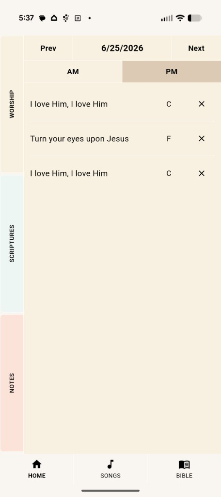
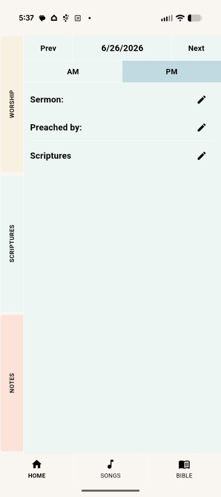
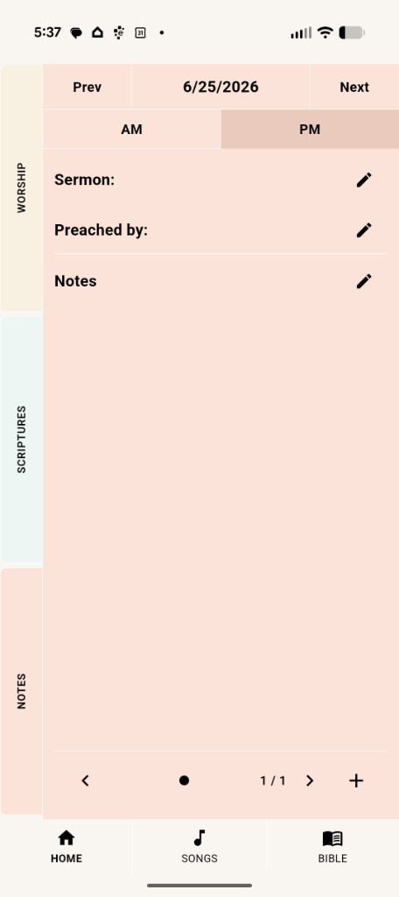
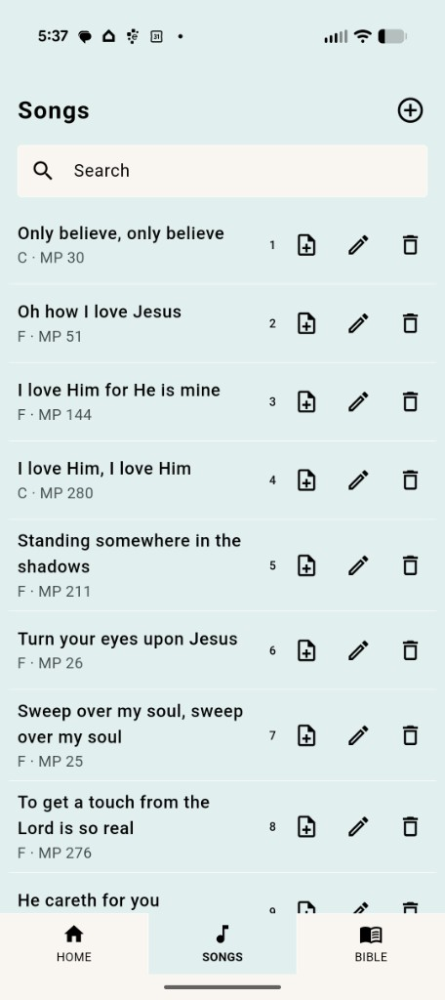
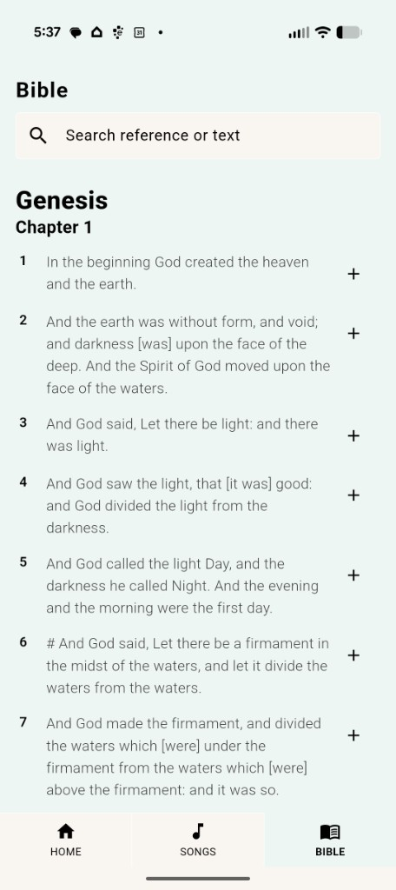

Worship
Log every song sung in the service. Add titles and keys from the built-in library, or build your AM and PM set lists for the day.
Capture every service. Keep every word.
A calm, offline journal for worship songs, sermon notes, and scriptures — organized by date and service time, with a built-in Bible and song library.
Church Journal is built around how you actually experience church — morning or evening, songs sung, scriptures opened, and notes taken.
Log every song sung in the service. Add titles and keys from the built-in library, or build your AM and PM set lists for the day.
Record sermon title, speaker, and scripture references. Tap any reference to jump straight into the Bible reader.
Take multi-page sermon notes with swipe navigation. Add pages as the message unfolds — nothing gets lost.
Search 500+ worship songs offline. Read the full Bible with reference search — no internet required.
See what was sung at each service, with musical keys at a glance.

Capture the sermon title, who preached, and the scriptures covered.

Swipe between note pages and add more as you need them.

Browse and search hundreds of hymns and worship songs. Add any song to today’s journal with one tap.

Full Bible built in. Search by reference or text, and add verses to your journal.

Your journal stays on your device. No account required. Optional morning and evening reminders to keep you in the Word.